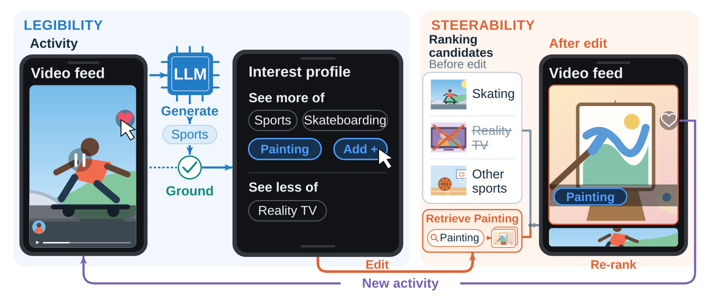
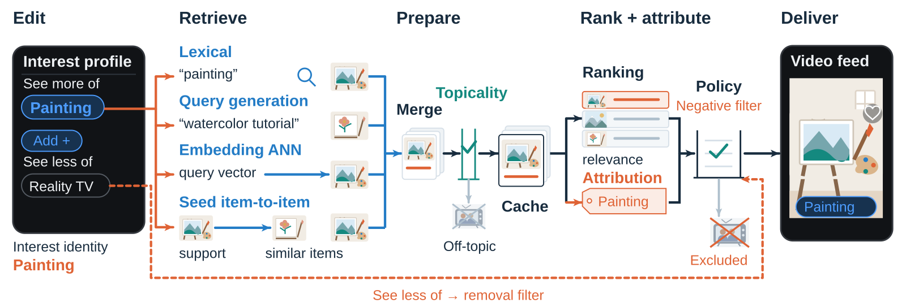

Contents · 6 sections
1Being readable is not enough; the edit has to enter the serving path2How one interest becomes an address for retrieval and serving control3Walkthrough: suppress reality TV, add painting4After the edit, which layer is actually moving reach?5What this means for people building editable recommendation6LimitationsSHARE
If you suppress "Reality TV" and add "Painting," will the next feed actually change? How CLEAR makes interests both readable and able to change results
You are scrolling a video feed and see skateboarding, and also reality TV. From your recent activity, the system infers that you are interested in Sports and Skateboarding, and lists these interests in natural language in a profile you can open. Reality TV is not your taste, so you put it under "see less." At the same time, you add a new interest: Painting.
The question is whether the next feed will actually change after you edit. Many recommenders encode taste as a latent vector, so a person can neither see what durable preference the system has inferred, nor confirm that a correction will keep taking effect. Downvoting one piece of content is not the same as changing a more durable preference, and it is hard to confirm that this edit will stay in later retrieval and ranking.
This paper is from Meta. It proposes and ships CLEAR (Controllable and Legible End-to-end Architecture for Recommendation). The problem it takes on is how the same interest layer can be both readable to a person and able to change later reach. Prior work has studied readable profiles, simulated edits, and re-ranking; consumer-facing controls are often provider-defined topics, follows, or per-item switches. CLEAR turns inferred interests into inspectable natural-language entries, stores user-accepted additions and suppressions as preference state with precedence, and uses behavioral grounding to trace inferred interests back to the user's own historical events. The same interest object is also a service address: the label and rewrites go to lexical retrieval, supporting events go to behavioral retrieval, a projection queries an embedding index, and a stable identity is used for ranking, attribution, and exposure control. A newly declared interest, even before it has behavioral support, still uses the same identity and first enters the candidate pool through topical retrieval. In a direct user study, about 88.5% of displayed interests were judged accurate. For newly declared interests, removing interest-conditioned candidate retrieval in the test-time removal order dropped same-day reach by 13.7 percentage points. Related components have been running for more than a year in four Instagram and Facebook surfaces.
An editable natural-language interest has to be something a person can read and change, and also a service address that retrieval, ranking, and exposure control can all use; what CLEAR attaches to the existing stack is only this editable interest layer.
Being readable is not enough; the edit has to enter the serving path
The paper defines the two properties separately. An interest layer is legible if a person can look at these natural-language entries and judge whether the system's inferences match their interests. An interest layer is steerable if accepted edits become durable preference state that serving actually consumes, and if changing this serving path produces a measurable change in later reach. Displaying interests is not enough to show that the recommender acts on them.
In production, Meta's Biography service builds CLEAR's inferred interest profile. Instagram's Your Algorithm and Tune Your Explore open this layer for users to inspect and edit. What the interface shows is a ranked subset of a larger served interest layer, using natural-language labels, not model coordinates. Each served record is bound to a normalized interest identity, plus a source, supporting evidence, a query projection, and preference state. Explicit additions or suppressions are stored apart from model outputs and keep precedence until the user changes them again; inferred interests may expire as support decays, while user-accepted preferences remain through later inference refreshes.
If you only add a simpler display layer, later generations can write back the Reality TV you just suppressed. CLEAR keeps explicit additions and suppressions outside the merge of inferred state, so later inference cannot quietly undo the correction.
How one interest becomes an address for retrieval and serving control
For an inferred interest, the system first has to ask which of the user's own actions this phrase corresponds to. CLEAR projects the phrase into the recommender's co-engagement space and searches backward over that user's own history. A content-understanding channel and a co-engagement-trained media channel each recover candidate support events; the deduplicated union is this interest's support set. Whether the set is large enough decides whether the inference can be kept; if different phrases are supported by the same activities for this person, they are also treated as duplicates.
Interests the user newly writes follow a different convention. Painting can appear before any matching history, so it does not first have to pass the support threshold used for inferred candidates. It still receives the same normalized identity, the same query projections, and the same topical matching path. If related activity already happens to exist in the history, it can immediately serve as a personalized anchor; later reactions to new content then enter ordinary history for subsequent inference.
Once in the recommendation path, this interest object exposes four fields. The display label plus queries rewritten from the profile become personalized lexical retrieval. Support events run trigger-to-item retrieval in the user's own co-engagement neighborhood. The query projection fetches nearby content from an approximate nearest-neighbor index. A stable user–interest identity is used to key cached supply, attribution, and exposure accounting. Behavioral retrieval is conjunctive: a candidate has to be close to the user's own support events and also match this interest under content-understanding features. So a video that is globally on-topic but unrelated to this person's behavioral neighborhood, or one that is behaviorally close but off-theme, does not pass.
A newly declared interest first uses the lexical and embedding paths to bring candidates in; once behavioral evidence exists, the support-set path further personalizes supply. Candidates from ordinary recommendation are also run through the same content- and semantics-based interest matcher, which decides which declared interest they belong to. Source identity only says which path a candidate came from; topical attribution says which interest it matches, and these two steps are separate. So an ordinary candidate that happens to be on-theme need not come from dedicated retrieval in order to be booked against the same interest's exposure ledger. The controller downstream therefore sees total exposure, not only what dedicated retrieval itself inserted.

The serving path for declared interests is called Carrera at Meta. Candidates retrieved under interest conditions are merged with the ordinary candidate pool and then ranked. What changes, therefore, is which items are eligible to compete, not merely a reshuffle of a fixed list.
Walkthrough: suppress reality TV, add painting
The walk below follows the example in the paper's Figure 1 and Figure 2. The numbers come from the later online experiments; the example itself comes from the paper figures, and the rankings in those figures are schematic.
Step one, generate and inspect. A large model proposes interests from your recent activity; behavioral grounding checks the inferred entries before they are allowed into the displayed profile. You see Sports and Skateboarding, and also Reality TV. You suppress Reality TV and add Painting.
Step two, write state that has precedence. A positive action adds or promotes an identity; a negative action deletes or suppresses it. This edit immediately updates the served interest layer. Painting, even with no support events yet, immediately gets a stable serving identity; Reality TV's explicit suppression is stored separately, and later inference refreshes cannot quietly write it back.
Step three, find candidates for this new interest. The label "Painting" itself becomes a lexical query, and profile-based rewriting can also expand it to something like "watercolor tutorial," as in Figure 2. The query projection fetches nearby content from the embedding index. Because there are no support events yet, the trigger-to-item path is not available for now, and initial supply first relies on topical retrieval. These candidates are merged with the ordinary pool, then pass a hard topicality gate that blocks off-theme items.
Step four, let them compete in ranking. Early and late rankers add a temporary declared-condition term, so this new interest's candidates can compete before much behavior has accumulated; a small number of head positions can also be reserved for candidates that match this new declaration, guaranteeing position, not only competitiveness. Reality TV goes through a serving-time negative filter. Both operations use the normalized identity, not only the words on the screen.
Step five, regulate by exposure, rather than pushing every match upward. The delivery controller, Fireball, keeps a decaying real-time count of the exposure already realized for this user–interest. Ordinary and dedicated sources, once attributed to Painting, go into the same ledger. If exposure runs high, further boosting is weakened; after it decays, the interest may again be eligible for restocking. Restocking changes whether this interest gets new supply; ranking changes how competitive the candidates already in the pool are. The controller does not change model parameters; later watches and interactions enter the recommender's original learning loop.

If you only change the display copy and do not change candidate supply, you cannot guarantee that the newly added Painting interest will receive extra candidates. Ordinary recommendation sometimes already sends on-theme content; dedicated supply is meant to fill in what the pool does not already have. If you only add a ranking score inside a fixed pool, a new theme still cannot surface when there is no supply. The paper uses an online cumulative ablation to take these layers apart.
After the edit, which layer is actually moving reach?
First, can people recognize this interest layer? 393 users scored 7,261 displayed interests, and about 88.5% were judged accurate. Among rejected entries, 41% had been seen but were not a personal interest, 29% were fleeting interests, and 21% had no personal interest at all. So part of the value of a readable profile is also to lay these mismatches open for people to edit.
The generator and the display are not the same thing. On an offline benchmark that shares a history format, user-confirmed references, and the same semantic judge, a task-specific Specialized 3B generator reached a mean-user F1@10 of 0.3967 on the top-ten targets, above Gemini 2.5 Pro at 0.3633 and above the previous production generator at 0.1911. This shows that specialized training for a fixed top-ten target can raise the quality of the interests placed up front. But Gemini 2.5 Pro's full-profile F1@all is 0.7051, above Specialized 3B's 0.5493, so a lead on the top ten does not generalize to a better whole profile. The direct study evaluates already-served displays; the benchmark evaluates generation before grounding and display selection.
Whether an inferred interest is kept also depends on whether support is sufficient. Raising the minimum support from 0 events to 3 events lifts full-profile precision from 69.9% to 77.4%, and drops reference recall from 46.2% to 28.7%. The authors chose a threshold of three so that full-profile precision of the displayed interests comes first. The deployed text-plus-media matcher has support precision of 77.2%, and can match 54.4% of deduplicated historical events to at least one retained interest. Hoot says
The article already walks Figure 1 and Figure 2: after Reality TV is suppressed and Painting is added, how that interest enters retrieval, ranking, and exposure accounting. This walkthrough only pursues a point that walk did not unpack: how many support events an inferred interest needs in order to stay, and how the archive's precision and recall then move. The same numbers from the article are used below.
at a support floor of 0 events, precision is 69.9% and recall 46.2% → raising it to 3 lifts precision by 7.5 percentage points → recall falls by 17.5 percentage points → the authors put full-profile precision first, and Figure 3's deployed matcher sits close to that three-event result
- support floor of 0 events → precision 69.9%, recall 46.2%Whether an inferred interest is kept depends first on whether it has enough support. When the minimum support is set to 0 events, full-profile precision is 69.9% and reference recall is 46.2%.support floor = 0 events
- floor raised to 3 events → precision up 7.5 percentage pointsAfter the minimum support is raised from 0 events to 3, full-profile precision rises to 77.4%. In other words, among the interests that remain on display, the share that matches the reference goes up by 7.5 percentage points.77.4 − 69.9 = 7.5 percentage points
- the same change → reference recall down 17.5 percentage pointsThe same threshold also drops reference recall from 46.2% to 28.7%. Some of the entries that are no longer kept would still have matched the reference; they just had fewer than 3 support events.46.2 − 28.7 = 17.5 percentage points
- three-event threshold + deployed matcher → precision is put firstThe authors chose the three-event threshold to put the displayed interests' full-profile precision first. In Figure 3, the deployed text-plus-media matcher has support precision 77.2% and matches 54.4% of deduplicated history events to at least one kept interest.deployed support precision 77.2%, close to 77.4%
These numbers answer whether an inferred interest can enter the displayed archive, not which serving-path layer later moves same-day reach after a user edit.

Source
When the paper raises minimum support from 0 events to 3, full-profile precision moves from 69.9% to 77.4% and reference recall from 46.2% to 28.7%; the authors chose the three-event threshold to put full-profile precision first. The deployed text-plus-media matcher has support precision 77.2% and matches 54.4% of deduplicated history events to at least one kept interest. 7.5 and 17.5 are differences of these reported percentages.
In Instagram production, the system-level picture is that newly declared interests usually get some same-day attributed reach, and that reach is mostly on-theme. On average, 79.6% of users' newly declared interests receive at least one attributed matching video on the same day; among eligible users who hold declared interests, 82.6% have at least 5% of their recommended content attributed to these interests. A multimodal judge independent of serving gates rated 87.2% of sampled matching impressions as on-theme, so most of the attributed inventory in that sample was judged relevant.
Restocking and volume control also move their own metrics. Relative to a previous age-limited strategy, restocking raised interest responses with at least 3 seconds of watch time by 8.34%; real-time per-interest accounting and recalibrated volume control reduced a recorded flooding-days metric by 15.4%. These are system-level levels or relative changes, so they do not yet take the layers apart.
The contribution of each layer comes from a five-arm, user-randomized cumulative ablation, whose endpoint is same-day matching reach for newly declared interests. In the test-time removal order, the losses are as follows.
| Layer removed | Drop in same-day reach |
|---|---|
| Interest-conditioned candidate retrieval | 13.7 percentage points |
| Reserved head-position insertion | 11.1 percentage points |
| Ranking term for newly added interests | 8.7 percentage points |
| All of the above layers removed | 33.5 percentage points |
(Numbers are from the paper's Table 3; all reported randomized comparisons have p<0.01.)
This shows that, in this removal order, supply, position, and ranking competitiveness each contribute, and no single layer accounts for most of the 33.5. Even with all layers turned off, a substantial share of newly declared interests still receive a matching video the same day, because the recommender sometimes already sends on-theme content. Negative filtering has no measurable change on this "positive addition" endpoint, which matches its job: it is responsible for removing unwanted content, not for sending requested content out. In a separate randomized experiment, similarity-aware downweighting on top of production filtering reduced same-day reappearance of suppressed interests by 11.8%.
Content attributed to declared interests has a like rate of 11.55%, versus 9.90% for other recommendations to the same users. But three-second skips are also 1.6 percentage points higher, and dwell per impression is 10% lower. Relative to search-result videos, likes are 1.9 times as high, three-second skips are 8.4 percentage points lower, and dwell is 26% higher. So relative to other recommendations on the same screen, the feedback is mixed; relative to search-result videos, these impressions have better like, skip, and dwell metrics.
What this means for people building editable recommendation
Ask two questions first: can a person read and edit the interests the system has inferred; after the edit, did this identity enter retrieval, reserved slots, ranking, and exposure accounting. A display layer alone is not enough to say that recommendation is now under the user's direction.
If you want to attach this to an existing ranker without starting a new backbone, make the interest object a service address, not only a piece of explanatory text. A new declaration can first go through topical retrieval, and use support events for personalization once behavior appears, without pretending the user already liked this in the past. Volume control needs its own ledger: every impression attributed to the same interest, whether from dedicated retrieval or ordinary recommendation, goes into the same book, or one theme can easily flood the feed. When you look at results, also look at whether it arrived the same day, whether it was on-theme, and at dwell and skips, not only likes.
Limitations
The 13.7, 11.1, and 8.7 breakdowns in Table 3 hold only for the removal order the paper tested; they cannot be treated as order-independent contribution splits. The 33.5 percentage points from removing all layers is an outer contrast, and is also not the same as adding the three layer numbers and then interpreting the sum.
The direct study is a descriptive result, not a randomized experiment. Specialized 3B only beats Gemini 2.5 Pro on F1@10 for a fixed top ten; full-profile F1@all still lags. Attributed content has a higher like rate, but shorter same-screen dwell and more skips, so "steerable" should not be read as a uniformly better experience.
What CLEAR attaches to the existing recommendation stack is a layer of inspectable, correctable interests, and the production evaluation also concentrates on Instagram's declared-interest serving. The paper does not open the entire latent state to the user.
How did this read for you?
Hoot made a note. Thanks for the feedback.
One tap, no sign-in; tap again to undo. Only anonymous counts are kept, never who you are.
Discussion
Add experiment details, reproduction notes or a different take. Requires a GitHub sign-in.
Loading the discussion…